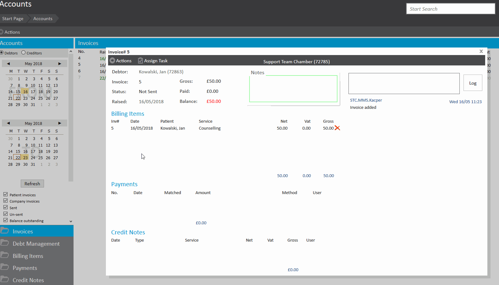

Once an invoice has been created a huge number of variations can still be made in its draft state(Cost of services, name of services etc), these details are only finalised once the invoice has been marked as sent.
This article explains how to mark an invoice as sent.
Please note, if you do not have the Xero integration, marking an invoice as sent purely means you are finalising the invoice. The invoice does not get sent anywhere.
If you have the Xero integration, marking an invoice as sent will not only finalise the invoice but send a copy of the invoice through the Xero.
To mark an invoice as sent, find and open the invoice you wish to send. Prior to the invoice being sent you may note that the ‘Status’ will be set to ‘Not Sent’. Click ‘Actions’ in the top left followed by ‘Mark Sent’
You will be provided with one of two options:

Once sent the invoice status will change to ‘Sent’ and the prices, names and number of services will be fixed and no further changes can be made. You will also be prompted to match any advanced payments on the patient’s account if there are any. Payments, credit notes, shortfalls and additional actions can now be taken on the finalised invoice.
If you notice there is an error on a finalised invoice, you will need to nullify the original invoice using credit notes and raise a new one. You can not undo marking an invoice as sent.